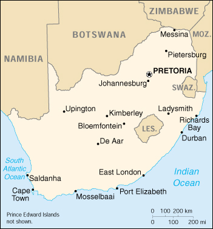

|
South Africa | |
| Introduction Geography People Government Economy Communications Transportation Military Transnational Issues | ||
|  | ||
| South Africa | Introduction | Top of Page |
| Background: | After the British seized the Cape of Good Hope area in 1806, many of the Dutch settlers (the Boers) trekked north to found their own republics. The discovery of diamonds (1867) and gold (1886) spurred wealth and immigration and intensified the subjugation of the native inhabitants. The Boers resisted British encroachments, but were defeated in the Boer War (1899-1902). The resulting Union of South Africa operated under a policy of apartheid - the separate development of the races. The 1990s brought an end to apartheid politically and ushered in black majority rule. |
| South Africa | Geography | Top of Page |
| Location: | Southern Africa, at the southern tip of the continent of Africa |
| Geographic coordinates: | 29 00 S, 24 00 E |
| Map references: | Africa |
| Area: |
total:
1,219,912 sq km
land: 1,219,912 sq km water: 0 sq km note: includes Prince Edward Islands (Marion Island and Prince Edward Island) |
| Area - comparative: | slightly less than twice the size of Texas |
| Land boundaries: |
total:
4,750 km
border countries: Botswana 1,840 km, Lesotho 909 km, Mozambique 491 km, Namibia 855 km, Swaziland 430 km, Zimbabwe 225 km |
| Coastline: | 2,798 km |
| Maritime claims: |
contiguous zone:
24 NM
continental shelf: 200-m depth or to the depth of exploitation exclusive economic zone: 200 NM territorial sea: 12 NM |
| Climate: | mostly semiarid; subtropical along east coast; sunny days, cool nights |
| Terrain: | vast interior plateau rimmed by rugged hills and narrow coastal plain |
| Elevation extremes: |
lowest point:
Atlantic Ocean 0 m
highest point: Njesuthi 3,408 m |
| Natural resources: | gold, chromium, antimony, coal, iron ore, manganese, nickel, phosphates, tin, uranium, gem diamonds, platinum, copper, vanadium, salt, natural gas |
| Land use: |
arable land:
10%
permanent crops: 1% permanent pastures: 67% forests and woodland: 7% other: 15% (1993 est.) |
| Irrigated land: | 12,700 sq km (1993 est.) |
| Natural hazards: | prolonged droughts |
| Environment - current issues: | lack of important arterial rivers or lakes requires extensive water conservation and control measures; growth in water usage threatens to outpace supply; pollution of rivers from agricultural runoff and urban discharge; air pollution resulting in acid rain; soil erosion; desertification |
| Environment - international agreements: |
party to:
Antarctic-Environmental Protocol, Antarctic-Marine Living Resources, Antarctic Seals, Antarctic Treaty, Biodiversity, Climate Change, Desertification, Endangered Species, Hazardous Wastes, Law of the Sea, Marine Dumping, Marine Life Conservation, Nuclear Test Ban, Ozone Layer Protection, Ship Pollution, Wetlands, Whaling
signed, but not ratified: none of the selected agreements |
| Geography - note: | South Africa completely surrounds Lesotho and almost completely surrounds Swaziland |
| South Africa | People | Top of Page |
| Population: |
43,586,097
note: South Africa took a census October 1996 which showed a population of 40,583,611 (after an official adjustment for a 6.8% underenumeration based on a postenumeration survey); estimates for this country explicitly take into account the effects of excess mortality due to AIDS; this can result in lower life expectancy, higher infant mortality and death rates, lower population and growth rates, and changes in the distribution of population by age and sex than would otherwise be expected (July 2001 est.) |
| Age structure: |
0-14 years:
32.01% (male 7,023,639; female 6,928,559)
15-64 years: 63.11% (male 13,264,654; female 14,244,484) 65 years and over: 4.88% (male 798,914; female 1,325,847) (2001 est.) |
| Population growth rate: | 0.26% (2001 est.) |
| Birth rate: | 21.12 births/1,000 population (2001 est.) |
| Death rate: | 16.77 deaths/1,000 population (2001 est.) |
| Net migration rate: | -1.73 migrant(s)/1,000 population (2001 est.) |
| Sex ratio: |
at birth:
1.02 male(s)/female
under 15 years: 1.01 male(s)/female 15-64 years: 0.93 male(s)/female 65 years and over: 0.6 male(s)/female total population: 0.94 male(s)/female (2001 est.) |
| Infant mortality rate: | 60.33 deaths/1,000 live births (2001 est.) |
| Life expectancy at birth: |
total population:
48.09 years
male: 47.64 years female: 48.56 years (2001 est.) |
| Total fertility rate: | 2.43 children born/woman (2001 est.) |
| HIV/AIDS - adult prevalence rate: | 19.94% (1999 est.) |
| HIV/AIDS - people living with HIV/AIDS: | 4.2 million (1999 est.) |
| HIV/AIDS - deaths: | 250,000 (1999 est.) |
| Nationality: |
noun:
South African(s)
adjective: South African |
| Ethnic groups: | black 75.2%, white 13.6%, Colored 8.6%, Indian 2.6% |
| Religions: | Christian 68% (includes most whites and Coloreds, about 60% of blacks and about 40% of Indians), Muslim 2%, Hindu 1.5% (60% of Indians), indigenous beliefs and animist 28.5% |
| Languages: | 11 official languages, including Afrikaans, English, Ndebele, Pedi, Sotho, Swazi, Tsonga, Tswana, Venda, Xhosa, Zulu |
| Literacy: |
definition:
age 15 and over can read and write
total population: 81.8% male: 81.9% female: 81.7% (1995 est.) |
| South Africa | Government | Top of Page |
| Country name: |
conventional long form:
Republic of South Africa
conventional short form: South Africa former: Union of South Africa abbreviation: RSA |
| Government type: | republic |
| Capital: | Pretoria; note - Cape Town is the legislative center and Bloemfontein the judicial center |
| Administrative divisions: | 9 provinces; Eastern Cape, Free State, Gauteng, KwaZulu-Natal, Mpumalanga, North-West, Northern Cape, Northern Province, Western Cape |
| Independence: | 31 May 1910 (from UK) |
| National holiday: | Freedom Day, 27 April (1994) |
| Constitution: | 10 December 1996; this new constitution was certified by the Constitutional Court on 4 December 1996, was signed by then President MANDELA on 10 December 1996, and entered into effect on 3 February 1997; it is being implemented in phases |
| Legal system: | based on Roman-Dutch law and English common law; accepts compulsory ICJ jurisdiction, with reservations |
| Suffrage: | 18 years of age; universal |
| Executive branch: |
chief of state:
President Thabo MBEKI (since 16 June 1999); Executive Deputy President Jacob ZUMA (since 17 June 1999); note - the president is both the chief of state and head of government
head of government: President Thabo MBEKI (since 16 June 1999); Executive Deputy President Jacob ZUMA (since 17 June 1999); note - the president is both the chief of state and head of government cabinet: Cabinet appointed by the president elections: president elected by the National Assembly for a five-year term; election last held 2 June 1999 (next scheduled for sometime between May and July 2004) election results: Thabo MBEKI elected president; percent of National Assembly vote - 100% (by acclamation) note: ANC-IFP governing coalition |
| Legislative branch: |
bicameral parliament consisting of the National Assembly (400 seats; members are elected by popular vote under a system of proportional representation to serve five-year terms) and the National Council of Provinces (90 seats, 10 members elected by each of the nine provincial legislatures for five-year terms; has special powers to protect regional interests, including the safeguarding of cultural and linguistic traditions among ethnic minorities); note - following the implementation of the new constitution on 3 February 1997 the former Senate was disbanded and replaced by the National Council of Provinces with essentially no change in membership and party affiliations, although the new institution's responsibilities have been changed somewhat by the new constitution
elections: National Assembly and National Council of Provinces - last held 2 June 1999 (next to be held NA 2004) election results: National Assembly - percent of vote by party - ANC 66.4%, DP 9.6%, IFP 8.6%, NP 6.9%, UDM 3.4%, ACDP 1.4%, FF 0.8%, other 2.9%; seats by party - ANC 266, DP 38, IFP 34, NP 28, UDM 14, ACDP 6, FF 3, other 11; National Council of Provinces - percent of vote by party - NA%; seats by party - ANC 61, NP 17, FF 4, IFP 5, DP 3 |
| Judicial branch: | Constitutional Court; Supreme Court of Appeals; High Courts; Magistrate Courts |
| Political parties and leaders: | African Christian Democratic Party or ACDP [Kenneth MESHOE, president]; African National Congress or ANC [Thabo MBEKI, president]; Democratic Alliance (formed from the merger of the Democratic Party or DP and the New National Party or NP) [Anthony LEON, leader]; Freedom Front or FF [Constand VILJOEN, president]; Inkatha Freedom Party or IFP [Mangosuthu BUTHELEZI, president]; Pan-Africanist Congress or PAC [Stanley MOGOBA, president]; United Democratic Movement or UDM [Bantu HOLOMISA] |
| Political pressure groups and leaders: | Congress of South African Trade Unions or COSATU [Zwelinzima VAVI, general secretary]; South African Communist Party or SACP [Blade NZIMANDE, general secretary]; South African National Civics Organization or SANCO [Mlungisi HLONGWANE, national president]; note - COSATU and SACP are in a formal alliance with the ANC |
| International organization participation: | ACP, AfDB, BIS, C, CCC, ECA, FAO, G-77, IAEA, IBRD, ICAO, ICC, ICFTU, ICRM, IDA, IFAD, IFC, IFRCS, IHO, ILO, IMF, IMO, Inmarsat, Intelsat, Interpol, IOC, IOM, ISO, ITU, MONUC, NAM, NSG, OAU, OPCW, PCA, SACU, SADC, UN, UNCTAD, UNESCO, UNHCR, UNIDO, UNITAR, UNMEE, UPU, WCL, WFTU, WHO, WIPO, WMO, WToO, WTrO, ZC |
| Diplomatic representation in the US: |
chief of mission:
Ambassador Makate Sheila SISULU
chancery: 3051 Massachusetts Avenue NW, Washington, DC 20008 telephone: [1] (202) 232-4400 FAX: [1] (202) 265-1607 consulate(s) general: Chicago, Los Angeles, and New York |
| Diplomatic representation from the US: |
chief of mission:
Ambassador Delano E. LEWIS, Sr.
embassy: 877 Pretorius Street, Pretoria mailing address: P. O. Box 9536, Pretoria 0001 telephone: [27] (12) 342-1048 FAX: [27] (12) 342-2244 consulate(s) general: Cape Town, Durban, Johannesburg |
| Flag description: |
two equal width horizontal bands of red (top) and blue separated by a central green band which splits into a horizontal Y, the arms of which end at the corners of the hoist side; the Y embraces a black isosceles triangle from which the arms are separated by narrow yellow bands; the red and blue bands are separated from the green band and its arms by narrow white stripes
note: prior to 26 April 1994, the flag was actually four flags in one - three miniature flags reproduced in the center of the white band of the former flag of the Netherlands, which had three equal horizontal bands of orange (top), white, and blue; the miniature flags were a vertically hanging flag of the old Orange Free State with a horizontal flag of the UK adjoining on the hoist side and a horizontal flag of the old Transvaal Republic adjoining on the other side |
| South Africa | Economy | Top of Page |
| Economy - overview: | South Africa is a middle-income, developing country with an abundant supply of resources, well-developed financial, legal, communications, energy, and transport sectors, a stock exchange that ranks among the 10 largest in the world, and a modern infrastructure supporting an efficient distribution of goods to major urban centers throughout the region. However, growth has not been strong enough to cut into the 30% unemployment, and daunting economic problems remain from the apartheid era, especially the problems of poverty and lack of economic empowerment among the disadvantaged groups. Other problems are crime, corruption, and HIV/AIDS. At the start of 2000, President MBEKI vowed to promote economic growth and foreign investment, and to reduce poverty by relaxing restrictive labor laws, stepping up the pace of privatization, and cutting unneeded governmental spending. |
| GDP: | purchasing power parity - $369 billion (2000 est.) |
| GDP - real growth rate: | 3% (2000 est.) |
| GDP - per capita: | purchasing power parity - $8,500 (2000 est.) |
| GDP - composition by sector: |
agriculture:
5%
industry: 30% services: 65% (1999 est.) |
| Population below poverty line: | 50% (2000 est.) |
| Household income or consumption by percentage share: |
lowest 10%:
1.1%
highest 10%: 45.9% (1994) |
| Inflation rate (consumer prices): | 5.3% (2000 est.) |
| Labor force: | 17 million economically active (2000) |
| Labor force - by occupation: | agriculture 30%, industry 25%, services 45% (1999 est.) |
| Unemployment rate: | 30% (2000 est.) |
| Budget: |
revenues:
$31.1 billion
expenditures: $34.4 billion, including capital expenditures of $NA billion (FY01/02) |
| Industries: | mining (world's largest producer of platinum, gold, chromium), automobile assembly, metalworking, machinery, textile, iron and steel, chemicals, fertilizer, foodstuffs |
| Industrial production growth rate: | 2.4% (2000 est.) |
| Electricity - production: | 186.903 billion kWh (1999) |
| Electricity - production by source: |
fossil fuel:
92.74%
hydro: 0.39% nuclear: 6.87% other: 0% (1999) |
| Electricity - consumption: | 172.393 billion kWh (1999) |
| Electricity - exports: | 3.884 billion kWh (1999) |
| Electricity - imports: | 2.457 billion kWh (1999) |
| Agriculture - products: | corn, wheat, sugarcane, fruits, vegetables; beef, poultry, mutton, wool, dairy products |
| Exports: | $30.8 billion (f.o.b., 2000 est.) |
| Exports - commodities: | gold, diamonds, other metals and minerals, machinery and equipment |
| Exports - partners: | UK, Italy, Japan, US, Germany |
| Imports: | $27.6 billion (f.o.b., 2000 est.) |
| Imports - commodities: | machinery, foodstuffs and equipment, chemicals, petroleum products, scientific instruments |
| Imports - partners: | Germany, US, UK, Japan |
| Debt - external: | $25.6 billion (2000 est.) |
| Economic aid - recipient: | $676.3 million |
| Currency: | rand (ZAR) |
| Currency code: | ZAR |
| Exchange rates: | rand per US dollar - 7.60 (March 2001), 6.93983 (2000), 6.10948 (1999), 5.52828 (1998), 4.60796 (1997), 4.29935 (1996) |
| Fiscal year: | 1 April - 31 March |
| South Africa | Communications | Top of Page |
| Telephones - main lines in use: | 5.075 million (1999) |
| Telephones - mobile cellular: | over 2,000,000 (1999) |
| Telephone system: |
general assessment:
the system is the best developed and most modern in Africa
domestic: consists of carrier-equipped open-wire lines, coaxial cables, microwave radio relay links, fiber-optic cable, radiotelephone communication stations, and wireless local loops; key centers are Bloemfontein, Cape Town, Durban, Johannesburg, Port Elizabeth, and Pretoria international: 2 submarine cables; satellite earth stations - 3 Intelsat (1 Indian Ocean and 2 Atlantic Ocean) |
| Radio broadcast stations: | AM 14, FM 347 (plus 243 repeaters), shortwave 1 (1998) |
| Radios: | 13.75 million (1997) |
| Television broadcast stations: | 556 (plus 144 network repeaters) (1997) |
| Televisions: | 5.2 million (1997) |
| Internet country code: | .za |
| Internet Service Providers (ISPs): | 44 (2000) |
| Internet users: | 1.82 million (2000) |
| South Africa | Transportation | Top of Page |
| Railways: |
total:
21,431 km
narrow gauge: 20,995 km 1.067-m gauge (9,087 km electrified); 436 km 0.610-m gauge (1995) |
| Highways: |
total:
358,596 km
paved: 59,753 km (including 1927 km of expressways) unpaved: 298,843 km (1996) |
| Waterways: | NA |
| Pipelines: | crude oil 931 km; petroleum products 1,748 km; natural gas 322 km |
| Ports and harbors: | Cape Town, Durban, East London, Mosselbaai, Port Elizabeth, Richards Bay, Saldanha |
| Merchant marine: |
total:
8 ships (1,000 GRT or over) totaling 271,650 GRT/268,604 DWT
ships by type: container 6, petroleum tanker 2 (2000 est.) |
| Airports: | 741 (2000 est.) |
| Airports - with paved runways: |
total:
142
over 3,047 m: 9 2,438 to 3,047 m: 5 1,524 to 2,437 m: 47 914 to 1,523 m: 71 under 914 m: 10 (2000 est.) |
| Airports - with unpaved runways: |
total:
599
1,524 to 2,437 m: 33 914 to 1,523 m: 304 under 914 m: 262 (2000 est.) |
| South Africa | Military | Top of Page |
| Military branches: | South African National Defense Force or SANDF (includes Army, Navy, Air Force, and Medical Services), South African Police Service or SAPS |
| Military manpower - military age: | 18 years of age |
| Military manpower - availability: | males age 15-49: 11,469,812 (2001 est.) |
| Military manpower - fit for military service: | males age 15-49: 6,977,328 (2001 est.) |
| Military manpower - reaching military age annually: | males: 466,399 (2001 est.) |
| Military expenditures - dollar figure: | $2 billion (FY00/01) |
| Military expenditures - percent of GDP: | 1.5% (FY99/00) |
| Military - note: | the National Defense Force continues to integrate former military, black homelands forces, and ex-opposition forces |
| South Africa | Transnational Issues | Top of Page |
| Disputes - international: | Swaziland has asked South Africa to open negotiations on reincorporating some nearby South African territories that are populated by ethnic Swazis or that were long ago part of the Swazi Kingdom |
| Illicit drugs: | transshipment center for heroin, hashish, marijuana, and possibly cocaine; cocaine consumption on the rise; world's largest market for illicit methaqualone, usually imported illegally from India through various east African countries; illicit cultivation of marijuana |
{kind=link}
{kind=link}